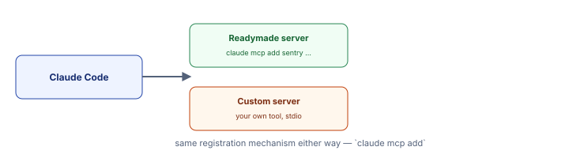

<!DOCTYPE html>
<html lang="en">
<head>
<meta charset="UTF-8">
<meta name="viewport" content="width=device-width, initial-scale=1.0">
<title>W2D0 · 08 MCP Servers &amp; Tools</title>
<link rel="stylesheet" href="../css/session-guide.css">
</head>
<body>
<p class="site-index-link"><a href="../index.html">← Week 2 course index</a></p>

<header class="hero">
  <p class="eyebrow">W2D0 · Topic 08 · <a href="00_orientation.html" style="color:#cbd8ff;">index</a> · <a href="07_context_management.html" style="color:#cbd8ff;">← 07</a> · <a href="09_github_automation.html" style="color:#cbd8ff;">09 →</a></p>
  <h1>MCP servers &amp; tools — a first look</h1>
  <p>A light primer — Week 2 Days 1–2 go much deeper (in-process vs. network servers, Streamable HTTP, permission gating). Here, just the registration mechanics.</p>
</header>

<main>

<section id="concept">
  <h2>Concept: MCP Servers and Custom Tools</h2>
  <div class="step">
    <h3>The Big Picture</h3>
    <p>MCP (Model Context Protocol) is a standard for exposing tools to Claude. Built-in tools (Read, Edit, Bash, etc.) are always there. Custom tools come from MCP servers you register. Two types:</p>
    <ul>
      <li><b>Readymade servers</b> — Hosted integrations maintained by others. Example: a Sentry server that lets Claude query errors; a GitHub server that lets it look up PR status. You register with a URL.</li>
      <li><b>Custom servers</b> — Your own code, running locally, exposing tools you need. Example: a tool to query your internal database, run custom analysis, access proprietary APIs. You register with a local command.</li>
    </ul>

    <h3>How Registration Works</h3>
    <p><b>List what's connected:</b></p>
    <pre><code>claude mcp list</code></pre>

    <p><b>Add a readymade server:</b></p>
    <pre><code>claude mcp add --transport http github https://github-mcp-server.anthropic.com</code></pre>

    <p><b>Add a custom local server:</b></p>
    <pre><code>claude mcp add my-tool -- python W2D0/snippets/my_tool_server.py</code></pre>

    <p><b>Remove a server:</b></p>
    <pre><code>claude mcp remove my-tool</code></pre>

    <h3>Custom Server Skeleton</h3>
    <p>A minimal custom MCP server using FastMCP (Python):</p>
    <pre><code">from mcp.server.fastmcp import FastMCP

server = FastMCP("my-server")

@server.tool()
def my_tool(input_text: str) -> str:
    """What this tool does"""
    result = do_something(input_text)
    return result

if __name__ == "__main__":
    server.run()
</code></pre>

    <p>The <code>@server.tool()</code> decorator registers a function as a callable tool. Claude Code discovers the tool's name and docstring automatically.</p>

    <h3>When to Build Custom Tools</h3>
    <ul>
      <li><b>Access to proprietary data or APIs</b> — Your internal database, analytics, billing system</li>
      <li><b>Expensive or complex operations</b> — Training a model, running a simulation, querying a data warehouse</li>
      <li><b>External integrations Claude doesn't have built-in</b> — Salesforce, Jira, custom monitoring systems</li>
      <li><b>Encapsulation of tricky logic</b> — Instead of explaining how to run a command, wrap it in a tool</li>
    </ul>

    <figure class="concept-figure">
      
      <figcaption>Same registration, different sources: readymade (HTTP) or custom (local command).</figcaption>
    </figure>
  </div>
</section>

<section id="use-cases">
  <h2>Real-World Use Cases</h2>
  <div class="step">
    <h3>1. Database Query Tool</h3>
    <p><b>The problem:</b> Claude needs to look up customer data, order history, or schema information, but direct database access is risky.</p>
    <p><b>The solution:</b> A custom MCP server wraps database queries in a safe interface. Claude calls tools like <code>query_customer(id)</code> or <code>get_order_status(order_id)</code> instead of writing SQL directly.</p>
    <p><b>The result:</b> Claude can reason about data without security risks. All queries go through your vetted interface.</p>

    <h3>2. Real-Time Monitoring and Alerts</h3>
    <p><b>The problem:</b> You want Claude to check system health (CPU usage, error rates, uptime) before deploying or troubleshooting.</p>
    <p><b>The solution:</b> A custom MCP server connects to your monitoring system (Prometheus, Datadog, CloudWatch) and exposes tools like <code>check_cpu_usage()</code>, <code>get_recent_errors()</code>.</p>
    <p><b>The result:</b> Claude makes deployment decisions with real system metrics, not guesses.</p>

    <h3>3. External API Integration</h3>
    <p><b>The problem:</b> Claude needs to call payment APIs, send emails, or trigger third-party workflows, but you don't want to expose raw API calls.</p>
    <p><b>The solution:</b> MCP server wraps the API. Claude calls <code>process_refund(amount, reason)</code> instead of knowing HTTP details and auth tokens.</p>
    <p><b>The result:</b> Clean abstraction layer. API keys and complexity hidden.</p>

    <h3>4. Search and Document Retrieval</h3>
    <p><b>The problem:</b> Claude needs to search your company's documentation, knowledge base, or code repo. Full-text search is too noisy; you need semantic understanding.</p>
    <p><b>The solution:</b> MCP server exposes semantic search via vector database. Claude calls <code>search_docs(query)</code> and gets relevant documents, ranked by relevance.</p>
    <p><b>The result:</b> Claude finds exactly what it needs without reading thousands of files.</p>

    <h3>5. Custom Data Analysis and Reporting</h3>
    <p><b>The problem:</b> You have proprietary analysis tools (ML models, statistical functions) that Claude should use but doesn't have built-in access to.</p>
    <p><b>The solution:</b> MCP server exposes them as tools. Claude calls <code>predict_churn(customer_id)</code>, <code>calculate_roi(campaign_data)</code>, etc.</p>
    <p><b>The result:</b> Claude leverages your proprietary analysis without reimplementing it.</p>
  </div>
</section>

<section id="handson">
  <h2>Hands-on Practice: Five Examples</h2>

  <div class="step">
    <h3>Example 1: List Registered MCP Servers</h3>
    <span class="where-tag where-vm">Terminal/PowerShell</span>

    <p><b>Step 1:</b> Check what's currently registered:</p>
    <pre><code>claude mcp list</code></pre>

    <p><b>What you'll see:</b> A list of MCP servers (if any). Initially empty is normal.</p>

    <div class="checkpoint">
      <b class="tag">Checkpoint</b>
      You know what's registered and how to check.
    </div>
  </div>

  <div class="step">
    <h3>Example 2: Create a Custom MCP Server</h3>
    <span class="where-tag where-claude">Claude Code chat panel</span>

    <p><b>Step 1:</b> Ask Claude to build a simple server:</p>
    <div class="prompt-box">
      <div class="prompt-label">Prompt</div>
      <pre><code>Create a minimal MCP server at W2D0/snippets/wordcount_server.py using
mcp.server.fastmcp.FastMCP. It should have one tool: count_words(text: str)
that returns the word count as an integer. Show me the exact code.</code></pre>
    </div>

    <p><b>Step 2:</b> Verify the file was created:</p>
    <pre><code># On Mac/Linux
cat W2D0/snippets/wordcount_server.py

# On Windows (PowerShell)
Get-Content W2D0\snippets\wordcount_server.py</code></pre>

    <div class="checkpoint">
      <b class="tag">Checkpoint</b>
      The server code exists and has the FastMCP setup with a @server.tool() decorator.
    </div>
  </div>

  <div class="step">
    <h3>Example 3: Register Your Server</h3>
    <span class="where-tag where-vm">Terminal/PowerShell</span>

    <p><b>Step 1:</b> Register the server:</p>
    <pre><code>claude mcp add wordcount -- python W2D0/snippets/wordcount_server.py</code></pre>

    <p><b>Step 2:</b> Confirm it was registered:</p>
    <pre><code>claude mcp list</code></pre>

    <p><b>What you should see:</b> "wordcount" appears in the list, marked as connected.</p>

    <div class="checkpoint">
      <b class="tag">Checkpoint</b>
      Your server is registered and ready to use.
    </div>
  </div>

  <div class="step">
    <h3>Example 4: Use Your Custom Tool</h3>
    <span class="where-tag where-claude">Claude Code chat panel</span>

    <p><b>Step 1:</b> Ask Claude to use your new tool:</p>
    <div class="prompt-box">
      <div class="prompt-label">Prompt</div>
      <pre><code>Use the count_words tool from the wordcount server to count the words
in this string: "Hello world this is a test of the MCP custom tool system."
Tell me the result.</code></pre>
    </div>

    <p><b>What should happen:</b> Claude calls your count_words tool and reports the word count (should be around 12).</p>

    <div class="checkpoint">
      <b class="tag">Checkpoint</b>
      Your custom tool was called and returned a result. The MCP server is working.
    </div>
  </div>

  <div class="step">
    <h3>Example 5: Clean Up (Unregister)</h3>
    <span class="where-tag where-vm">Terminal/PowerShell</span>

    <p><b>Step 1:</b> When done experimenting, unregister the server:</p>
    <pre><code>claude mcp remove wordcount</code></pre>

    <p><b>Step 2:</b> Confirm it's gone:</p>
    <pre><code>claude mcp list</code></pre>

    <div class="checkpoint">
      <b class="tag">Checkpoint</b>
      The wordcount server is no longer registered.
    </div>

    <p><b>Key learning:</b> MCP servers are easy to register, use, and unregister. You'll build more sophisticated ones in Week 2 Day 1.</p>
  </div>

</section>

</main>

<footer class="page-footer">W2D0 · Claude Code Foundations — 08 MCP Servers &amp; Tools</footer>
<p class="site-index-link bottom"><a href="../index.html">← Back to course index</a></p>
<script src="../css/lab-readme.js"></script>
</body>
</html>
